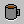
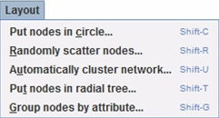

This function clusters the network based either on separating existing components or by clustering around the largest component.
If you click the button  in the toolbar, the visualization will show the default view--"Structural View"-- to cluster the components around the largest component.
It is possible, however, to choose this manually by using the "Automatically Cluster Network" menuItem from the "Layout" Menu.

By clicking the menuItem, a dialog box will be generated and you can choose either "Component view" or "Structural view". Component view spreads the components throughout the window by using as much of the space as possible. Structural view places one large component in the middle, and it occupies most of the space. The rest of the components are placed in the periphery, circled around the large central component. Changing the distance between two nodes effects the visualization. A bigger distance preset makes it easier to see the structure of the network, while a shorter distance makes it easier to see the components.
Copyright © 2010, Science of Networks In Communities
Created with the Freeware Edition of HelpNDoc: Free HTML Help documentation generator